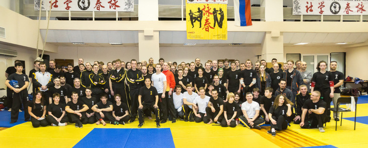
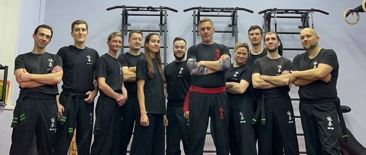
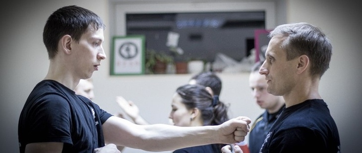
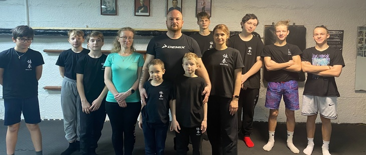

Центральный зал Кронверкский пр., 9, лит. Б (ДФК ПГУПС)
Наша школа обладает официальным статусом и членством в Федерации Вин Чун России, а также является одним из отделений международной организации Вин Чун (International Wing Chun Organization — IWCO). Мы - официальная спортивная Федерация Вин Чун России (ФВЧР), поэтому помимо самих занятий мы проводим: городские, региональные и всероссийские соревнования, выезды на международные соревнования в Европу и Китай, семинары и тренировочные мероприятия. Школа является продолжателем классической ветви Вин Чун происходящей от Грандмастера Ип Мана:
Ип Ман → Чоу Дзе Чуен → Дональд Мак → Анатолий Белощин → Осман Динаев
Зал где проходят все основные мероприятия (соревнования, семинары) и где тренируются все старшие ученики школы. Зал оборудован как боксерским рингом, так и татами, мешками и боксерскими грушами, зеркалами. Тренировки ведут опытные инструктора, что обеспечивает идеальные условия для изучения боевого искусства.

Афонская, 5
Наша школа обладает официальным статусом и членством в Федерации Вин Чун России, а также является одним из отделений международной организации Вин Чун (International Wing Chun Organization — IWCO). Мы - официальная спортивная Федерация Вин Чун России (ФВЧР), поэтому помимо самих занятий мы проводим: городские, региональные и всероссийские соревнования, выезды на международные соревнования в Европу и Китай, семинары и тренировочные мероприятия. Школа является продолжателем классической ветви Вин Чун происходящей от Грандмастера Ип Мана:
Ип Ман → Чоу Дзе Чуен → Дональд Мак → Анатолий Белощин → Осман Динаев → Алексей Борзов
Небольшая, но дружная команда, опытный инструктор и комфортная обстановка поможет Вам быстрее освоить искусство Вин Чун. Сам зал находится в пешей доступности от метро и оборудован всем необходимым для занятий.

Всеволожск ул. Центральная 2
Наша школа обладает официальным статусом и членством в Федерации Вин Чун России, а также является одним из отделений международной организации Вин Чун (International Wing Chun Organization — IWCO). Мы - официальная спортивная Федерация Вин Чун России (ФВЧР), поэтому помимо самих занятий мы проводим: городские, региональные и всероссийские соревнования, выезды на международные соревнования в Европу и Китай, семинары и тренировочные мероприятия. Школа является продолжателем классической ветви Вин Чун происходящей от Грандмастера Ип Мана:
Ип Ман → Чоу Дзе Чуен → Дональд Мак → Анатолий Белощин → Осман Динаев → Илья Маник
Это место, где традиции сочетаются с современными методиками тренировок. Мы уделяем внимание индивидуальной работе с каждым учеником, помогая раскрыть потенциал через глубокие знания стиля и практическое применение техник.

Гатчина ул. Генерала Кныша 15
Наша школа обладает официальным статусом и членством в Федерации Вин Чун России, а также является одним из отделений международной организации Вин Чун (International Wing Chun Organization — IWCO). Мы - официальная спортивная Федерация Вин Чун России (ФВЧР), поэтому помимо самих занятий мы проводим: городские, региональные и всероссийские соревнования, выезды на международные соревнования в Европу и Китай, семинары и тренировочные мероприятия. Школа является продолжателем классической ветви Вин Чун происходящей от Грандмастера Ип Мана:
Ип Ман → Чоу Дзе Чуен → Дональд Мак → Анатолий Белощин → Осман Динаев → Алексей Васильев
В нашем зале города Гатчина существует две группы.
Взрослая группа:
В данных группах основной задачей является передача технического арсенала, используется академический подход, в результате которого студенты получают навыки и знания инструкторского состава.
Физическая кондиция:
- Cвод комплексов на развития: силы, скорости, гибкости;
- Свод комплексов на развития энергии;
- Практики оздоровления, закаливания, восстановления.
Техническая и стратегическая база: программа IWCO.
Детская группа:
Основная цель занятий в детских группах - это реализация классического подхода, традиционных школ ушу, где физическое и моральное воспитание идут рука об руку.
1. Физическая подготовка:
- Сила, гибкость, скорость.
2. Техническая подготовка:
- Программа IWCO;
- Прикладное оружие;
- Спарринги по правилам IWCO.
3. Идеологическая подготовка:
- Истории различных боевых искусств, культура общения и поведения.